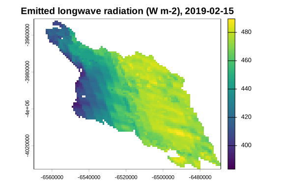

Land-Surface Energy and Water Fluxes from Earth Observation Data
MODIS + METRIC + GWR → ETa
EarthFlux is an R package for modelling land-surface energy and water fluxes from Earth observation data. Its first target is spatially distributed actual evapotranspiration (ETa) estimated with the METRIC (Mapping EvapoTranspiration at high Resolution with Internalized Calibration) surface energy balance framework.
Its methodological focus is the meteorological forcing of METRIC. Instead of relying only on a single weather station assumed to be representative of the whole scene, EarthFlux represents weather variables as spatial surfaces, for example with geographically weighted regression (GWR), so that this choice can be compared against simpler alternatives.
MODIS surface state + weather stations
│
spatial forcing (GWR or alternatives)
│
METRIC: Rn → G → anchor pixels → rah, dT → H → LE
│
ETinst → ETrF → ETa (+ diagnostics)Whether spatial forcing improves ETa estimates is a research question that EarthFlux is designed to test. It is not a claim made by this package.
Status
EarthFlux 0.1.0 is the first, experimental release. It is not on CRAN and it is not for operational or scientific production use: no result has been validated.
What 0.1.0 includes:
-
METRIC core physics as numeric functions, from net radiation (
ef_net_radiation()and its radiation components) through soil heat flux (ef_g()), anchor pixel selection (ef_select_anchors()), the iterative calibration of the sensible heat flux (ef_calibrate_h()) and the latent heat flux, to daily actual evapotranspiration (ef_et_daily()). -
Meteorological forcing: weather station tables and their quality control (
ef_station_table(),ef_station_qc()), derived variables and reference evapotranspiration (ef_ref_et(),ef_station_ref_et(); grass ETo of FAO-56 and grass or alfalfa reference of the ASCE-EWRI standardized equation). -
Spatial regionalization of station variables over the working grid (
ef_regionalize()): representative station (C1), global regression and inverse distance weighting (C2) and geographically weighted regression (C3, internal GWR core), with exact prediction by raster blocks, optionally in parallel, and spatial block cross-validation. -
MODIS preprocessing (internal, not exported yet) into the surface state of the METRIC chain, and the example scene
cauquenes_modis(Cauquenes province, Chile, 15 February 2019).
What 0.1.0 does not include: the integrated earthflux() workflow and its presets, the automatic download of MODIS products, the elevation model and gridded weather forcing, and any validation results.
Verification status:
- Verified against the primary sources: the reference evapotranspiration chain of FAO-56 (worked examples reproduced) and of ASCE-EWRI (2005) (equations and constants; its worked examples are not reproduced yet), the unit conversions and the MODIS product facts (scale factors, fill values, quality bits, with citations to the official user guides).
-
Candidate (corroborated by secondary sources, verification against Allen, Tasumi & Trezza, 2007, pending): most METRIC formulations. Open points include the height of the stable momentum correction (
stable_psi_m_height, decision SH-11), which decides whether the sensible heat calibration converges when the cold anchor is stable; the specific heat of air; the temperature used for the incoming longwave radiation; and the emissivity of non-vegetated pixels, derived from a LAI assigned by the user (optionlai_nonveg; LAI 0 in the example scene).
Design principles
- Sensor-independent physics. METRIC functions take physical variables with documented units; sensor modules (MODIS first) produce them.
- Independent spatial forcing. GWR is a separate module whose fitted models, bandwidths, residuals and diagnostics remain inspectable.
- Modular METRIC. Net radiation, soil heat flux, anchor pixel selection, aerodynamic resistance, dT, sensible and latent heat flux and ET are separate, individually tested components.
- Diagnostics instead of silent corrections. Physically anomalous values are reported and flagged, never silently modified.
-
Scalable. Raster processing is based on terra, with optional parallel processing (under the user’s
futureplan) that gives identical results to sequential runs.
Installation
You can install the latest release of EarthFlux from GitHub with:
# install.packages("pak")
pak::pak("djwillichile/EarthFlux@*release")or the development version with pak::pak("djwillichile/EarthFlux").
Example
The packaged scene cauquenes_modis is the MODIS surface state of the Cauquenes province (Maule Region, Chile) on 15 February 2019 (Terra overpass), on the 1 km sinusoidal grid. It is a packed terra raster:
library(EarthFlux)
r <- terra::unwrap(cauquenes_modis)
data.frame(layer = names(r), unit = terra::units(r))[1:9, ]
#> layer unit
#> 1 lst K
#> 2 albedo -
#> 3 ndvi -
#> 4 lai m2 m-2
#> 5 emissivity -
#> 6 emis_31 -
#> 7 emis_32 -
#> 8 doy -
#> 9 utc_hour hThe longwave radiation emitted by the surface follows from the land surface temperature (K) and the broadband emissivity of every cell (NA outside the province and where the LST is missing):
rl_out <- terra::rast(r[["lst"]])
terra::values(rl_out) <- ef_rl_out(
lst = terra::values(r[["lst"]], mat = FALSE),
emissivity = terra::values(r[["emissivity"]], mat = FALSE)
)
names(rl_out) <- "rl_out"
terra::global(rl_out, c("min", "mean", "max"), na.rm = TRUE)
#> min mean max
#> rl_out 383.4013 458.0683 489.6118
terra::plot(rl_out, main = "Emitted longwave radiation (W m-2), 2019-02-15")
The article Example scene: Cauquenes on the package website shows every layer, the flag words and the provenance of the scene.
Net radiation for two pixels, with illustrative input values (not observations). rl_out is the longwave radiation emitted by the surface and emissivity must be the emissivity used to compute it; a scalar rl_in is recycled.
ef_net_radiation(
rs_in = c(800, 650), # incoming shortwave [W m-2]
albedo = c(0.20, 0.25), # broadband albedo [-]
rl_in = 320, # incoming longwave [W m-2]
rl_out = c(450.08, 430.50), # emitted longwave [W m-2]
emissivity = c(0.98, 0.97) # broadband emissivity [-]
)
#> [1] 503.52 367.40Invalid inputs are rejected with classed errors instead of being silently corrected:
ef_net_radiation(rs_in = 800, albedo = 1.2, rl_in = 320, rl_out = 450, emissivity = 0.98)
#> Error in `ef_net_radiation()`:
#> ! `albedo` must lie in [0, 1]; found 1 value(s) outside this interval.Related work
EarthFlux is conceptually inspired by the R package water (Olmedo et al., 2016), which implements METRIC for Landsat imagery. EarthFlux is an independent implementation with a different scope: sensor-independent physics, spatially varying meteorological forcing and diagnostics as part of the results.